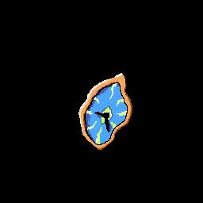

Oksiana, in panic of having to go back to her real world start to run into the forest. Without thinking and in need of reassurance, she wraps her arms around what she think is a tree and closes her eyes.When she open them again and look up she realize that it's not a tree, but a giant bunny wearing a long suit and tie.
He raises his paw or hand and place it behind her hair in a comfort gesture.
He then speaks up. " Everything is alright, there is no danger here, don't worry."
Next 